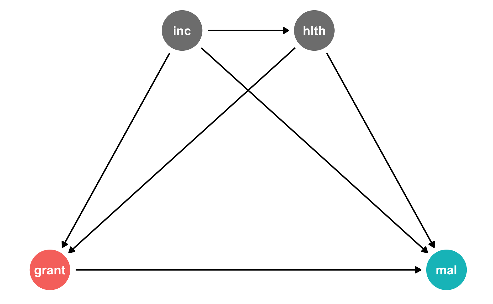

![]()
library(tidyverse)
library(broom)
library(scales)
library(ggdag)
library(dagitty)
library(truncnorm)
library(ipw)
library(WeightIt)My program evaluation class is basically a fun wrapper around topics in causal inference and econometrics. I’m a big fan of Judea Pearl-style “causal revolution” causal graphs (or DAGs), and they’ve made it easier for both me and my students to understand econometric approaches like diff-in-diff, regression discontinuity, and instrumental variables.
DAGs are also incredibly helpful for doing causal inference with observational data without needing a specific quasi-experimental situation. As I show in this blog post (and in this new textbook chapter!), you can use DAGs to identify confounders that distort the relationship (i.e. open up backdoors) between treatment and outcome. You can then use statistical methods to close those backdoors and adjust for the confounding. In both that blog post and the chapter, I show how to do this with matching and with inverse probability weighting (IPW).
However, those examples assume that the treatment is binary. This is fine—lots of social programs are binary (used program/didn’t use program), and the math for creating inverse probability weights with binary treatment variables is fairly straightforward. However, treatment variables are also often not binary, especially outside of program evaluation.
In my own research, I’m working on a couple projects right now where the “treatment” is a count of anti-NGO legal restrictions in a country. I want to be able to use DAGs and inverse probability weighting to adjust for confounders, but I can’t use the IPW stuff I’ve been teaching because that variable isn’t binary! This research project gets even more complicated because it involves time-series cross-sectional (TSCS) data with both time-varying and time-invarying confounders, which opens up a whole other can of worms that I’ll figure out soon following Blackwell and Glynn (2018).
So I had to teach myself how to do IPW with continuous variables. This post shows how to calculate IPWs for both binary and continuous treatments, both manually and with a couple different R packages (ipw and WeightIt).
Binary treatments
Example data
For this example, we’ll generate a DAG for a hypothetical program where bed net use causes a reduction in malaria risk. That relationship is confounded by both income and health, and income influences health. Income and health both increase the probability of net usage.
The treatment here is binary: either people use nets or they don’t.
mosquito_dag <- dagify(mal ~ net + inc + hlth,
net ~ inc + hlth,
hlth ~ inc,
coords = list(x = c(mal = 4, net = 1, inc = 2, hlth = 3),
y = c(mal = 1, net = 1, inc = 2, hlth = 2)),
exposure = "net",
outcome = "mal")
ggdag_status(mosquito_dag) +
guides(color = "none") +
theme_dag()
We’ll measure these nodes like so:
- Malaria risk: scale from 0–100, mostly around 40, but ranging from 10ish to 80ish. Best to use a Beta distribution.
- Net use: binary 0/1, TRUE/FALSE variable, where 50% of people use nets. Best to use a binomial distribution. However, since we want to use other variables that increase the likelihood of using a net, we’ll generate a latent continuous variable, rescale it to 0–1, and then use it as probabilities in
rbinom()and assign people to treatment based on those probabilities. - Income: weekly income, measured in dollars, mostly around 500 ± 300. Best to use a normal distribution.
- Health: scale from 0–100, mostly around 70, but ranging from 50ish to 100. Best to use a Beta distribution.
# Make this randomness consistent
set.seed(1234)
# Simulate 1138 people (just for fun)
n_people <- 1138
net_data <- tibble(
# Make an ID column (not necessary, but nice to have)
id = 1:n_people,
# Generate income variable: normal, 500 ± 300
income = rnorm(n_people, mean = 500, sd = 75)
) %>%
# Generate health variable: beta, centered around 70ish
mutate(health_base = rbeta(n_people, shape1 = 7, shape2 = 4) * 100,
# Health increases by 0.02 for every dollar in income
health_income_effect = income * 0.02,
# Make the final health score and add some noise
health = health_base + health_income_effect + rnorm(n_people, mean = 0, sd = 3),
# Rescale so it doesn't go above 100
health = rescale(health, to = c(min(health), 100))) %>%
# Generate net variable based on income, health, and random noise
mutate(net_score = (0.5 * income) + (1.5 * health) + rnorm(n_people, mean = 0, sd = 15),
# Scale net score down to 0.05 to 0.95 to create a probability of using a net
net_probability = rescale(net_score, to = c(0.05, 0.95)),
# Randomly generate a 0/1 variable using that probability
net = rbinom(n_people, 1, net_probability)) %>%
# Finally generate a malaria risk variable based on income, health, net use,
# and random noise
mutate(malaria_risk_base = rbeta(n_people, shape1 = 4, shape2 = 5) * 100,
# Risk goes down by 10 when using a net. Because we rescale things,
# though, we have to make the effect a lot bigger here so it scales
# down to -10. Risk also decreases as health and income go up. I played
# with these numbers until they created reasonable coefficients.
malaria_effect = (-30 * net) + (-1.9 * health) + (-0.1 * income),
# Make the final malaria risk score and add some noise
malaria_risk = malaria_risk_base + malaria_effect + rnorm(n_people, 0, sd = 3),
# Rescale so it doesn't go below 0,
malaria_risk = rescale(malaria_risk, to = c(5, 70))) %>%
select(-c(health_base, health_income_effect, net_score, net_probability,
malaria_risk_base, malaria_effect))
head(net_data)
## # A tibble: 6 × 5
## id income health net malaria_risk
## <int> <dbl> <dbl> <int> <dbl>
## 1 1 409. 63.1 0 45.1
## 2 2 521. 83.5 1 23.4
## 3 3 581. 73.0 0 36.5
## 4 4 324. 60.6 0 58.7
## 5 5 532. 73.4 1 32.7
## 6 6 538. 42.6 0 52.5IPW manually, binary treatment
If we just look at the effect of nets on malaria risk without any statistical adjustment, we see that nets cause a decrease of 13 points in malaria risk. This is wrong though because there’s confounding.
# Wrong correlation-is-not-causation effect
model_net_naive <- lm(malaria_risk ~ net, data = net_data)
tidy(model_net_naive)
## # A tibble: 2 × 5
## term estimate std.error statistic p.value
## <chr> <dbl> <dbl> <dbl> <dbl>
## 1 (Intercept) 41.9 0.413 102. 0
## 2 net -13.6 0.572 -23.7 2.90e-101According to do-calculus logic, we need to adjust for both income and health:
adjustmentSets(mosquito_dag)
## { hlth, inc }We’ll do that with inverse probability weighting. First we’ll use the health and income confounders to predict the treatment, or net use, and then we’ll generate propensity scores. We’ll then use those propensity scores to generate inverse probability weights following this formula:
\[ \frac{\text{Treatment}}{\text{Propensity}} + \frac{1 - \text{Treatment}}{1 - \text{Propensity}} \]
This formula will calculate weights for the average treatment effect (ATE). Lucy D’Agostino McGowan has formulas for a bunch of different IPWs, including the average treatment on the treated (ATT), average treatment among the controls (ATC), and other effects.
Here’s how we do that with R:
# Logit model to predict net use
model_predict_net <- glm(net ~ income + health,
family = binomial(link = "logit"),
data = net_data)
# Generate propensity scores and IPWs
net_data_ipw <- augment_columns(model_predict_net, net_data,
type.predict = "response") %>%
rename(propensity = .fitted) %>%
mutate(ipw = (net / propensity) + ((1 - net) / (1 - propensity)))
net_data_ipw %>%
select(id, income, health, net, malaria_risk, propensity, ipw) %>%
head()
## # A tibble: 6 × 7
## id income health net malaria_risk propensity ipw
## <int> <dbl> <dbl> <int> <dbl> <dbl> <dbl>
## 1 1 409. 63.1 0 45.1 0.380 1.61
## 2 2 521. 83.5 1 23.4 0.628 1.59
## 3 3 581. 73.0 0 36.5 0.659 2.93
## 4 4 324. 60.6 0 58.7 0.266 1.36
## 5 5 532. 73.4 1 32.7 0.597 1.68
## 6 6 538. 42.6 0 52.5 0.459 1.85Finally we’ll use those weights in a regression model to find the ATE. After adjusting for confounding and closing the backdoor paths opened by income and health, the effect of nets is -10.5, which is more accurate than the naive estimate we found before. Yay!
model_net_ipw <- lm(malaria_risk ~ net, data = net_data_ipw, weights = ipw)
tidy(model_net_ipw)
## # A tibble: 2 × 5
## term estimate std.error statistic p.value
## <chr> <dbl> <dbl> <dbl> <dbl>
## 1 (Intercept) 40.4 0.409 98.8 0
## 2 net -10.5 0.578 -18.3 1.83e-65IPW with the ipw package, binary treatment
Instead of running a logistic regression model and generating propensity scores by hand, we can use the ipw package to generate that ipw column automatically. Specify the confounders in the denominator argument. There’s a numerator argument too that we can use for generating stabilized weights, but we’ll skip that for now.
# ipwpoint() can't handle tibbles! Force net_data to be a data.frame
weights_ipwpoint <- ipwpoint(
exposure = net,
family = "binomial", # The treatment is binary
link = "logit",
denominator = ~ income + health,
data = as.data.frame(net_data)
)
# They're the same!
head(weights_ipwpoint$ipw.weights)
## [1] 1.61 1.59 2.93 1.36 1.68 1.85
head(net_data_ipw$ipw)
## [1] 1.61 1.59 2.93 1.36 1.68 1.85The resulting weights object here is a standalone object, and you can do other things with it like summary(). We can add the weights back into the main data and then fit the final model (technically we don’t need to—we could just say weights = weights_ipwpoint$ipw.weights and it would work just fine, but I don’t like working with standalone vectors and prefer to have them be columns, just so everything is all together in one place).
We get the same ATE of -10.5.
net_data_ipwpoint <- net_data %>%
mutate(ipw = weights_ipwpoint$ipw.weights)
model_net_ipwpoint <- lm(malaria_risk ~ net,
data = net_data_ipwpoint, weights = ipw)
tidy(model_net_ipwpoint)
## # A tibble: 2 × 5
## term estimate std.error statistic p.value
## <chr> <dbl> <dbl> <dbl> <dbl>
## 1 (Intercept) 40.4 0.409 98.8 0
## 2 net -10.5 0.578 -18.3 1.83e-65IPW with the WeightIt package, binary treatment
We can also use the WeightIt package to generate weights. It has slightly different syntax and can find all sorts of different estimands beyond the ATE (like most of the ones Lucy has listed). It can also handle a bunch of different methods beyond propensity scores. WeightIt can also handle tibbles, which is nice. It also provides a bunch of other summary information (if you use summary()), like effective sample sizes (ESS) in the treated/untreated groups and covariate balance.
weights_weightit <- weightit(net ~ income + health, # Model net use with confounders
data = net_data,
estimand = "ATE", # Find the ATE
method = "ps") # Build weights with propensity scores
weights_weightit
## A weightit object
## - method: "ps" (propensity score weighting)
## - number of obs.: 1138
## - sampling weights: none
## - treatment: 2-category
## - estimand: ATE
## - covariates: income, health
# See even more details here
# summary(weights_weightit)
# Same as the other methods!
head(weights_weightit$weights)
## [1] 1.61 1.59 2.93 1.36 1.68 1.85As with ipw, we can add the weights to the dataset and run the model to find the same -10.5 ATE:
net_data_weightit <- net_data %>%
mutate(ipw = weights_weightit$weights)
model_net_weightit <- lm(malaria_risk ~ net,
data = net_data_weightit, weights = ipw)
tidy(model_net_weightit)
## # A tibble: 2 × 5
## term estimate std.error statistic p.value
## <chr> <dbl> <dbl> <dbl> <dbl>
## 1 (Intercept) 40.4 0.409 98.8 0
## 2 net -10.5 0.578 -18.3 1.83e-65Continuous treatments
Example data
Inverse probability weights work with continuous treatment variables too, but the math is a little lot trickier. For this example, we’ll generate a DAG for a hypothetical program where poorer families are given cash grants that they can spend on malaria prevention supplies, like mosquito nets, chemical treatments, and medication. It’s a voluntary program—people self select into it, and we’ll assume that people with lower health scores and lower income will sign up. The amount of the grant depends on income.
The treatment here is continuous: people get different amounts of anti-malaria grant money. For the sake of simplicity here, everyone gets some grant money. I’m not even going to try multilevel zero-inflated models or anything (though those are cool!).
The DAG looks the same as before (since we’re trying to keep things super simple here):
grant_dag <- dagify(mal ~ grant + inc + hlth,
grant ~ inc + hlth,
hlth ~ inc,
coords = list(x = c(mal = 4, grant = 1, inc = 2, hlth = 3),
y = c(mal = 1, grant = 1, inc = 2, hlth = 2)),
exposure = "grant",
outcome = "mal")
ggdag_status(grant_dag) +
guides(color = "none") +
theme_dag()
We’ll measure these nodes like so:
- Malaria risk: scale from 0–100, mostly around 40, but ranging from 10ish to 80ish. Best to use a Beta distribution.
- Grant: amount between 5 and 40, centered around 20ish.
- Income: weekly income, measured in dollars, mostly around 500 ± 300. Best to use a normal distribution.
- Health: scale from 0–100, mostly around 70, but ranging from 50ish to 100. Best to use a Beta distribution.
# Make this randomness consistent
set.seed(1234)
# Simulate 1504 people
n_people <- 1504
grant_data <- tibble(
# Make an ID column (not necessary, but nice to have)
id = 1:n_people,
# Generate income variable: normal, 500 ± 300
income = rnorm(n_people, mean = 500, sd = 75)
) %>%
# Generate health variable: beta, centered around 70ish
mutate(health_base = rbeta(n_people, shape1 = 7, shape2 = 4) * 100,
# Health increases by 0.02 for every dollar in income
health_income_effect = income * 0.02,
# Make the final health score and add some noise
health = health_base + health_income_effect + rnorm(n_people, mean = 0, sd = 3),
# Rescale so it doesn't go above 100
health = rescale(health, to = c(min(health), 100))) %>%
# Generate grant variable
mutate(grant_base = rtruncnorm(n_people, mean = 18, sd = 10, a = 5, b = 40),
# Grants are higher for people with lower incomes; higher for people with lower health
grant_effect = (income * -0.25) + (health * -0.5),
# Make the final grant amount + noise + rescale it back down
grant = grant_base + grant_effect + rnorm(n_people, mean = 0, sd = 8),
grant = round(rescale(grant, to = c(5, 40)), 0)) %>%
# Finally generate a malaria risk variable based on income, health, grant amount,
# and random noise
mutate(malaria_risk_base = rbeta(n_people, shape1 = 4, shape2 = 5) * 100,
# Risk goes down as grant money goes up. I played with these numbers
# until they created reasonable coefficients.
malaria_effect = (-40 * grant) + (-25 * health) + (-0.05 * income),
# Make the final malaria risk score and add some noise
malaria_risk = malaria_risk_base + malaria_effect + rnorm(n_people, 0, sd = 3),
# Rescale so it doesn't go below 0,
malaria_risk = rescale(malaria_risk, to = c(5, 70))) %>%
select(-c(health_base, health_income_effect, grant_base, grant_effect,
malaria_risk_base, malaria_effect))
head(grant_data)
## # A tibble: 6 × 5
## id income health grant malaria_risk
## <int> <dbl> <dbl> <dbl> <dbl>
## 1 1 409. 70.2 27 26.3
## 2 2 521. 75.3 18 33.3
## 3 3 581. 62.6 20 42.3
## 4 4 324. 83.9 28 11.8
## 5 5 532. 74.3 20 31.8
## 6 6 538. 75.9 15 36.2IPW manually, continuous treatment
If we just look at the effect of grants on malaria risk without any adjustment, every extra grant dollar causes a drop of 0.4 malaria risk points. Once again, though, this is wrong because of confounding.
# Wrong correlation-is-not-causation effect
model_grant_naive <- lm(malaria_risk ~ grant, data = grant_data)
tidy(model_grant_naive)
## # A tibble: 2 × 5
## term estimate std.error statistic p.value
## <chr> <dbl> <dbl> <dbl> <dbl>
## 1 (Intercept) 44.2 1.35 32.8 2.56e-178
## 2 grant -0.417 0.0615 -6.78 1.69e- 11According to do-calculus logic, we again need to adjust for both income and health:
adjustmentSets(grant_dag)
## { hlth, inc }Here’s where the math gets tricky. When we worked with a binary treatment, we calculated the propensity score for each observation and then used this formula to generate inverse probability weights:
\[ \frac{\text{Treatment}}{\text{Propensity}} + \frac{1 - \text{Treatment}}{1 - \text{Propensity}} \]
We can’t do that with continuous treatment variables, though, since we don’t really have propensity scores. Instead, we use this hairy-but-not-too-scary formula (from Naimi et al. (2014); ungated version here; also see this for another R example):
\[ \text{IPW} = \frac{f_X (X; \mu_1, \sigma^2_1)}{f_{X | C} (X | C = c; \mu_2, \sigma^2_2)} \]
Phew. That’s a lot of math, but it’s not too bad if we take it apart:
- \(X\) stands for the continuous exposure or treatment variable
- \(C\) stands for the confounders
- The \(f_\cdot (\cdot)\) function in both the numerator and denominator stands for a probability density function with a mean of \(\mu\) and a variance of \(\sigma^2\)
- The numerator \(f_X (X; \mu_1, \sigma^2_1)\) refers to the probability distribution of just the treatment variable (technically you could just use 1 as the numerator, but that can lead to unstable weights—using the probability distribution of the treatment helps stabilize the weights)
- The denominator \(f_{X | C} (X | C = c; \mu_2, \sigma^2_2)\) refers to the probability distribution of the treatment variable explained by the confounders
(Fun fact: I’m like 85% sure that the \(\frac{\text{Treatment}}{\text{Propensity}} + \frac{1 - \text{Treatment}}{1 - \text{Propensity}}\) formula is just an algebraically rearranged and simplified version of this fancier equation)
We can calculate each element of this fraction and then generate the inverse probability weights. Here’s how to do that with R:
# The numerator is the probability distribution of just the treatment variable.
# We'll use a normal distribution for it (hence dnorm()). We need to feed
# dnorm() the grant amount for each person, the predicted value from a simple
# grant ~ 1 model, and the sd of the residuals from that model
model_num <- lm(grant ~ 1, data = grant_data)
num <- dnorm(grant_data$grant,
predict(model_num),
sd(model_num$residuals))
# The denominator is the probability distribution of the treatment variable
# explained by the confounders. We'll again use a normal distribution for it.
# We'll feed dnorm() the grant amount, the predicted value from a model that
# includes the confounders, and the sd of the residuals from that model
model_den <- lm(grant ~ health + income, data = grant_data)
den <- dnorm(grant_data$grant,
predict(model_den),
sd(model_den$residuals))
# Finally, we make actual IPW weights by building the fraction
grant_data_ipw <- grant_data %>%
mutate(ipw = num / den)
head(grant_data_ipw)
## # A tibble: 6 × 6
## id income health grant malaria_risk ipw
## <int> <dbl> <dbl> <dbl> <dbl> <dbl>
## 1 1 409. 70.2 27 26.3 0.288
## 2 2 521. 75.3 18 33.3 0.492
## 3 3 581. 62.6 20 42.3 0.687
## 4 4 324. 83.9 28 11.8 0.177
## 5 5 532. 74.3 20 31.8 0.499
## 6 6 538. 75.9 15 36.2 0.748Now we can use the weights to find the ATE just like we did with the binary treatment:
model_grant_ipw <- lm(malaria_risk ~ grant, data = grant_data_ipw, weights = ipw)
tidy(model_grant_ipw)
## # A tibble: 2 × 5
## term estimate std.error statistic p.value
## <chr> <dbl> <dbl> <dbl> <dbl>
## 1 (Intercept) 58.4 1.79 32.6 1.95e-176
## 2 grant -1.11 0.0806 -13.7 1.45e- 40Each dollar of grant money thus causes a drop of -1.1 malaria risk points. Neato!
IPW with the ipw package, continuous treatment
Manually creating the numerator and denominator can get tedious though. We can use the ipwpoint() function from ipw to generate continuous weights in one step. Instead of specifying a binomial treatment like we did before, we’ll use a Gaussian (normal) family. We also specify both the numerator and denominator. It will generate identical weights.
weights_continuous_ipwpoint <- ipwpoint(
exposure = grant,
family = "gaussian",
numerator = ~ 1,
denominator = ~ health + income,
data = as.data.frame(grant_data)
)
# Same values!
head(grant_data_ipw$ipw)
## [1] 0.288 0.492 0.687 0.177 0.499 0.748
head(weights_continuous_ipwpoint$ipw.weights)
## [1] 0.288 0.492 0.687 0.177 0.499 0.748We can then put those weights into the dataset and run a model with them. We get the same ATE of -1.1:
grant_data_ipwpoint <- grant_data %>%
mutate(ipw = weights_continuous_ipwpoint$ipw.weights)
model_grant_ipwpoint <- lm(malaria_risk ~ grant,
data = grant_data_ipwpoint, weights = ipw)
tidy(model_grant_ipwpoint)
## # A tibble: 2 × 5
## term estimate std.error statistic p.value
## <chr> <dbl> <dbl> <dbl> <dbl>
## 1 (Intercept) 58.4 1.79 32.6 1.95e-176
## 2 grant -1.11 0.0806 -13.7 1.45e- 40IPW with the WeightIt package, continuous treatment
The WeightIt package also handles continuous weights. The syntax is a lot simpler—there’s no need to worry about numerators and denominators.
weights_weightit <- weightit(grant ~ income + health, # Model grant amount with confounders
data = grant_data,
stabilize = TRUE)
weights_weightit
## A weightit object
## - method: "ps" (propensity score weighting)
## - number of obs.: 1504
## - sampling weights: none
## - treatment: continuous
## - covariates: income, health
# See even more details here
# summary(weights_weightit)
# Not the same as the other methods :(
head(weights_weightit$weights)
## [1] 0.580 0.990 1.384 0.356 1.005 1.506However(!), for mathy reasons I don’t understand, the weights it generates are not the same as what we get when doing it by hand or with ipwpoint(). In fact, they’re almost exactly twice as large as the manual and ipwpoint() weights:
# Manual weights
head(grant_data_ipw$ipw)
## [1] 0.288 0.492 0.687 0.177 0.499 0.748
# weightit() weights / 2
head(weights_weightit$weights) / 2
## [1] 0.290 0.495 0.692 0.178 0.502 0.753Surely there’s an argument to weightit() that I’m missing somewhere.
Regardless, for more mathy reasons I don’t understand, the ATE is identical even though the weights are roughly doubled:
grant_data_weightit <- grant_data %>%
mutate(ipw = weights_weightit$weights)
model_grant_weightit <- lm(malaria_risk ~ grant,
data = grant_data_weightit, weights = ipw)
tidy(model_grant_weightit)
## # A tibble: 2 × 5
## term estimate std.error statistic p.value
## <chr> <dbl> <dbl> <dbl> <dbl>
## 1 (Intercept) 58.4 1.79 32.6 1.95e-176
## 2 grant -1.11 0.0806 -13.7 1.45e- 40References
Blackwell, Matthew, and Adam N. Glynn. 2018. “How to Make Causal Inferences with Time-Series Cross-Sectional Data Under Selection on Observables.” American Political Science Review 112 (4): 1067–82. https://doi.org/10.1017/s0003055418000357.
Naimi, Ashley I., Erica E. M. Moodie, Nathalie Auger, and Jay S. Kaufman. 2014. “Constructing Inverse Probability Weights for Continuous Exposures; a Comparison of Methods.” Epidemiology 25 (2): 292–99. https://doi.org/10.1097/eDe.0000000000000053.